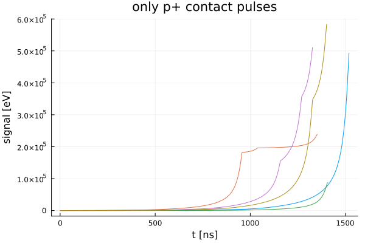

Simulate Ideal Pulses
You can also download this tutorial as a Jupyter notebook and a plain Julia source file.
Here we will use an example pet file csv format from LegendTestData corresponding to the Public Inverted Coax.
using LegendGeSim
using PlotsGet inputs from legend-test-data
using LegendTestDataDetector metadata
ldsim_path = joinpath(legend_test_data_path(), "data", "ldsim")
detector_name = "invcoax-metadata"
detector_metadata_filename = joinpath(ldsim_path, detector_name*".json");Alternatively, enter your own path to a real LEGEND detector JSON
detector_metadata_filename = "path/to/V04545A.json"PET input file
path_to_pet_file = joinpath(ldsim_path, "single-invcoax-th228-geant4.csv");Settings
See manual on Field Simulation and Ideal Pulse Simulation for a detailed explanation of environment and simulation settings, as well as the noise model settings
environment_settings = Dict(
"crystal_temperature_in_K" => 77,
"medium" => "vacuum",
);Simple settings for point charge simulation with dummy constant impurity
simulation_settings = Dict(
"method" => "SSD",
"cached_name" => "", # a non-empty string will cache the simulation results
);noise_model = Dict(
"type" => "sim"
);
# Simulate ideal pulsesDict{String, String} with 1 entry:
"type" => "sim"Provide an optional argument n_waveforms to define the number of pulses to be simulated. Default: all pulses based on the input file
pss_table, pss_truth = LegendGeSim.simulate_pulses(detector_metadata_filename, path_to_pet_file, environment_settings, simulation_settings; n_waveforms=5);[ Info: ---------------------- pet -> stp (stepping info)
┌ Info: Legend SolidStateDetector - Public Inverted Coax
│ ╭───╮ ╭───╮ ╰─ ✔ Operational voltage (L200 characterization): 3800.0 V
│ │ │ │ │ ╰─ ✔ n⁺contact thickness (0νββ analysis): 0.75 mm
│ │ │ │ │ ╰─ ⚠ Impurity model (DEFAULT) / Detector Offset: constant / unknown
│ │ ╰─╯ │ ╰─ value: 0
│ │ │ ╰─ Corrections: Scale / Offset: - / -
└ ╰── ─── ──╯ ╰─ ✔ Volume / Active volume: 240 cm^3 / 224 cm^3
Processing file: /home/runner/.julia/artifacts/11b2a7ab47d6f84b449b8f16112d0f3489ec697d/legend-exp-legend-testdata-cd70a8d/data/ldsim/single-invcoax-th228-geant4.csv for detector Public Inverted Coax
[ Info: ...clustering
1411 hits before clustering
1.119440 seconds (1.24 M allocations: 60.901 MiB, 6.24% gc time, 99.85% compilation time)
244 hits after clustering
[ Info: ...removing hits with no energy deposits
[ Info: ...removing events outside of the detector
[ Info: Simulation method: SSD
┌ Warning: No crystal metadata path given. Simulation with dummy constant impurity density.
└ @ LegendGeSim ~/work/LegendGeSim.jl/LegendGeSim.jl/src/pss.jl:74
[ Info: ---------------------- stp -> pss (ideal pulses)
[ Info: _||_||_||_ Simulate detector
[ Info: Simulating with SSD from scratch for given settings
[ Info: DL = 0mm
┌ Info: Legend SolidStateDetector - Public Inverted Coax
│ ╭───╮ ╭───╮ ╰─ ✔ Operational voltage (L200 characterization): 3800.0 V
│ │ │ │ │ ╰─ ✔ n⁺contact thickness (0νββ analysis): 0.75 mm
│ │ │ │ │ ╰─ ⚠ Impurity model (DEFAULT) / Detector Offset: constant / unknown
│ │ ╰─╯ │ ╰─ value: 0
│ │ │ ╰─ Corrections: Scale / Offset: - / -
└ ╰── ─── ──╯ ╰─ ✔ Volume / Active volume: 240 cm^3 / 224 cm^3
┌ Warning: You did not provide operating voltage in environment settings -> taking recommended voltage from metadata
└ @ LegendGeSim ~/work/LegendGeSim.jl/LegendGeSim.jl/src/legend_detector_to_ssd.jl:45
[ Info: Simulating at 3800.0V
...electric potential
...electric field
...weighting potential 1
...weighting potential 2
No fano noise (no noise model given)
[ Info: ~.~.~.~.~ Simulate charge pulses
[ Info: ~.~.~ SolidStateDetectors
[ Info: Detector has 2 contacts
[ Info: Table has 5 physics events (11 single charge depositions).
Progress: 40%|████████████████▍ | ETA: 0:00:06
Progress: 100%|█████████████████████████████████████████| Time: 0:00:04
[ Info: Generating waveforms...plot(pss_table.waveform, legend=false, linewidth=1.5)The "negative" waveforms are the ones coming from the n+ contact, so they are symmetric. In fact, the length of our table is twice the amount of waveforms we simulated.
length(pss_table)10plot(pss_table.waveform[1:5], legend=false, title="only p+ contact pulses")
Save output to hdf5 file
You can save simulated pulses in a file that can be used later.
using LegendHDF5IOpss_name = "cache/test_100wfs_pss.hdf5"
lh5open(pss_name, "w") do f
LegendHDF5IO.writedata(f.data_store, "pss/pss", pss_table[1:5])
LegendHDF5IO.writedata(f.data_store, "pss/truth", pss_truth[1:5])
endThis page was generated using Literate.jl.